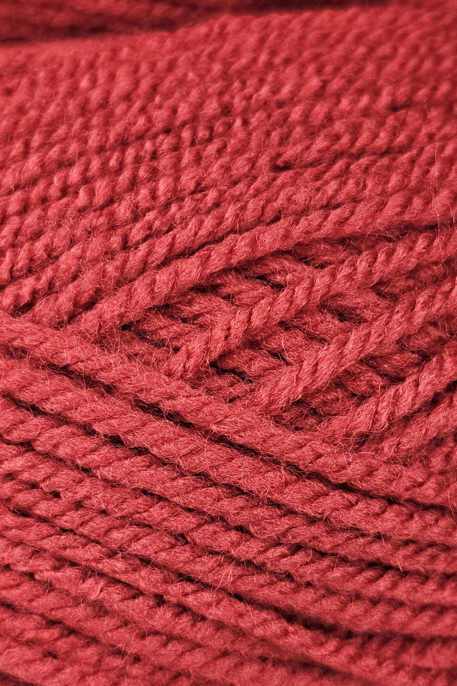

Madder
Rubia tinctorum

Location
Madder is native to the Mediterranian and Central Asia, but was cultivated across most of Europe as well. Alongside dyer's woad and weld, it was one of the staples of the medieval European dyeing industry. The earliest evidence of fabric dyed with madder was found in India.
Identification
Madder is a herbacious perennial plant. It has square stems and can grow up to 1.5 meters tall. The leaves are narrow and pointed, and are covered in small hooked hairs. It produces small, pale yellow flowers and red to black berries.
The most identifiable part of the madder plant is the long, bright red roots. These are the part of the plant the dye is extracted from. They can grow to be over a meter in length and 12 centimeters in width.
Color
Madder produces a rich red color, which can vary in intensity based on the strength and number of dye baths as well as the quality of the madder used.
Purple can also be achieved by overdyeing with a blue dye, or by using an iron mordant.
Mordants/Fixatives
A mordant is required to dye with madder. As mentioned above, an iron mordant can be used to produce a purplish shade. However, the most common mordant used with madder is allum